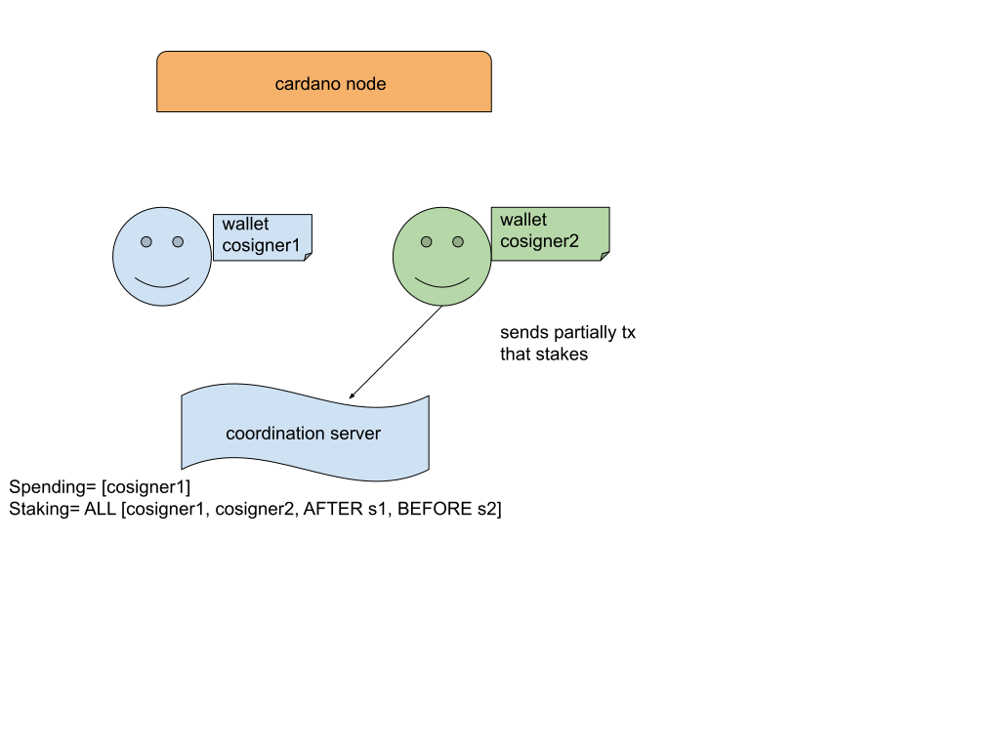

Multi-signature wallet
Multisig wallet, aka shared wallet, allows several participants to jointly control the wallet’s funds. The control is exercised over the spending, delegation and minting/burning of assets and is regulated by native scripts which specify what is the required set of witnesses and time conditions to be obeyed to make a transaction valid upon managing the shared resources.
Contents
- Introduction
- Overview of a wallet lifecycle
- Staking and spending are ortogonal
- Creating of a shared wallet
- Resources of a shared wallet
- Making a transaction in a shared wallet
- Summary
Introduction
Typically the native script can enforce that all or some parties must agree, i.e. sign a given transaction, in order to make the transaction valid, and hence spend from the wallet. For example, three out of four parties, or any party. The transaction could be also required to be sent before or after some point in time in order to be valid. As rules can be embedded inside themselves it is possible, for example, to design a rule engaging three parties, requiring two witnesses, but always including a specific party, and enforcing the submitting of the transaction not later than some point in time. The similar or different regulation could pertain to staking. As there is a separation of the control over the movements of funds and the rights (and obligations) in the PoS protocol powering the Cardano that are associated with those funds the native scripts regulating staking and spending could be different.
Overview of a wallet lifecycle
The multisig wallet needs intermediation during the construction and making a transaction. Intermediation vehicle, eg. coordination server, is needed to firstly agree on spending/staking ruling and to facilitate sharing cosigners identifiers. In case of making a transaction the intermediation vehicle is needed to smooth the exchange of a partially signed transaction to be handed over to another party to sign until a fully-signed transaction is achieved.
Figs. 1a-c introduce and visualize the construction phase.

Fig 1a. Wallet initialization: Spending/staking ruling and cosigner structure is decided.
Fig 1b. Wallet initialization: Cosigners share their extended account public keys.

Fig 1c. Wallet initiation. Each cosigner takes their other cosigner’s accXPub from the coordination server. Having spending/staking rules and all cosigners accXPubs one can create a multisig wallet. Each cosigner can search a balance and restore the wallet independently.
Parties upon multisig wallet creation agree on the script template regulating spending and optionally separate staking script template. So they need to communicate this between parties which can be intermediated via a coordination server or by other off-chain means (Fig. 1a). Template describes how scripts are going to be constructed. The script is formed in such a way that each cosigner tag is replaced with the public verification keys belonging to cosigners. The script is then hashed and is a part of the address that is engaged in transactions. Each party has its secret key (which is typically in the form of a mnemonic) that allows derivation of private and public keys as specified by a derivation path. Private keys allow signing transactions in which the corresponding public keys are engaged as a part of a script that give rise to spending credentials that build addresses. The secret key also allows derivation of an extended account public key (and of course its private dual) that each party shares with other parties. Without full account public key exchange multisig wallet is in incomplete state and cannot participate in transactions and recognize its resources. The collection of missing account public keys is performed off-chain (Fig. 1b). When a given party collects all account public keys from each party the wallet is complete and ready to operate. It means each party can recreate each party’s public keys and thus construct the script and its hash which acts as a credential. Only the full collection of the keys allows each party to derive scripts that build the addresses that are commonly recognized amidst parties and which participate in transactions. This means each cosigner needs to retrieve all missing account public keys (Fig 1c). Script hashes act as credentials in addresses and can regulate separately spending and delegation. When a spending transaction is to be submitted and accepted by blockchain the participants must collect all the required witnesses as specified by the spending script template. In the situation presented in Figs. 1 it means witnesses from both cosigner1 and cosigner2 are mandatory to be provided to have a fully signed spending transaction. For example, if we want to send some funds to another wallet, and the spending template requires two out of three witnesses, plus transaction submission not later than slot 100, then it means any two parties must sign a given transaction and submit the fully-signed transaction to the node at most at slot 100. It entails one party to construct a transaction and sign it, then hand it over off-chain (for example via a coordination server) to any other party for its signing. After the first sign we have a partially-signed transaction and only after adding another witness on top we have a fully-signed transaction that, if submitted before slot 100, is expected to be accepted by cardano-node. After sending the transaction each party separately is expected to detect the change of the balance of the shared wallet if the transaction is successful.
Staking and spending are ortogonal
Spending and staking is orthogonal to each other and could be regulated by different rules. The example presented in Fig 2 and Figs 3 show the case.

Fig 2. Spending transaction. Due to spending ruling cosigner1 does not need a consent from cosigner2 to spend funds from a multisig wallet. Hence, cosigner1 constructs, signs and submits the transaction that spends without coordination server intermediation. Cosigner2 does not regulate spending and is irrelevant in this regard, but can follow cosigner1 action by inspecting a balance of the shared wallet.

Fig 3a. Staking transaction. Cosigner2 wants to stake funds to a specified pool. Cosigner2 hands over the partially signed transaction to the coordination server. Cosigner2 cannot realize this action without a consent from cosigner1 as determined by staking ruling. Signing from both cosigner1 and cosigner2 is mandatory to move forward with staking.

Fig 3b. Staking transaction. The consent from cosigner1 is required to move forward with a staking transaction. Cosigner1 uses the coordination server to download a partially signed transaction, inspects it, and if everything is valid he inscribes its witness and submits it to the node. Due to time constraints present in the staking ruling he needs to realize the submission in a time period defined by (s1, s2). After staking action is realized, both cosigners see rewards and can initiate a withdrawal transaction that is regulated by staking ruling. Spending of the rewards is regulated by spending ruling meaning cosigner1 can do it without consent from cosigners2.
The detailed draft specification of the multi-signature HD wallet can be found here
What comes next is the technical description of what it entails for a multisig wallet to be created, what resources it has under its disposal and how spending of the funds looks like and what are mechanisms under the hood that make it happen.
Creating of a shared wallet
Let’s assume we have two parties interested in having a shared wallet and eager to jointly spend the funds. Each side at the end of this process will have its own shared wallet instance that is able to track the wallet’s resources. In order for those two parties to collaborate they need to decide on the following things before:
- Extended account public keys of other parties
- Spending script template
- ptional spending script template
This information needs to be intermediated via coordination server or shared off-chain. Agreeing on account index among the parties is not important as the shared wallet derives its resources on top of parties’ extended account keys. In order to understand this statement one needs to start with the fact that a shared wallet is a hierarchical deterministic wallet that imposes the exact tree derivation path. It is evident if we look at derivation path that any wallet uses for key derivation:
m / purpose' / coin_type' / account_ix' / role / index
In case of shared wallet we use
m / 1854’ / 1815’ / account_ix' / role / index
path to derive any key of index assuming a role and account_ix’ for the party’s mnemonic m.
Parties exchange their extended public keys (accXPub) between themselves assuming the following path to derive accXPub.
m / 1854’ / 1815’ / account_ix'
This has the immediate consequence that parties can exchange account public keys that were derived for different account indices. For each party it is enough to have accXPubs from all participants to derive other public keys that build credentials, both spending or staking. And thanks to that construct addresses that participate in transactions.
It is worth noting that all purpose, coin type and account index all use hardened type of derivation. To be even more concrete we could write down the path
m / 1854’ / 1815’ / 10' / 0 / 11
which denotes derivation path for the key assuming external role and index=11 for account index 10’.
Upon creation parties do not have to decide on account_ix' in order to be consistent when deriving key families for different roles.
Sharing accXPub is enough to make sure each party is able to fill in the script template with proper keys derived on top of them and
restore the address pool and hence is able to follow the shared wallet’s resources.
A script template regulates a witness set and time conditions to be met in order to spend or stake. The exact form is presented in CIP 1854. Below we paste several examples that are simple, rather self-explanatory but still interesting:
all [cosigner#1, self, cosigner#2]
any [cosigner#1, self, cosigner#2]
at_least 2 [cosigner#1, self, cosigner#2]
all [at_least 2 [cosigner#1, self, cosigner#2], from 100, until 120]
As seen in the last example, templates can be nested. The last example encodes the following conditions for each spending (or staking if this is a staking script template) transaction within the multisig wallet that has exactly this in the spending template: two witnesses are required and the transaction must be submitted within any slot belonging to <100, 200) range. When time conditions are met, it is enough to have witnesses from other parties (cosigner#1 and cosigner2) or our witness along with any other party to have a fully-signed transaction.
When the spending script template is chosen it cannot change until the end of the wallet’s life. The transaction conditions to be obeyed are determined statically upon wallet’s creation.
To sum up this part and be very concrete, each party after deciding off-chain script template and setting who is who (eg. me cosigner#1, you cosigner#2) creates the wallet via POST WALLET api call.
In order to get account public key to be shared with other the parties one calls GET ACCOUNT endpoint. https://cardano-foundation.io/cardano-wallet/api/edge/#operation/getAccountKeyShared
Updating other parties accXPubs is realized via PATCH WALLET PAYMENT PART endpoint for payment and
PATCH WALLET DELEGATION PART endpoint for delegation.
Resources of a shared wallet
When all parties' extended public keys are collected the wallet is ready to identify and discover its resources.
Each party can separately do this and will obtain the same results. Without accXPubs for all cosigners it is not possible.
In order to make this statement apparent one needs to appreciate that credential (either spending or staking) that
is part of each address can be constructed from either key hash or script hash (staking credential could be also constructor from pointer
- see delegation spec for details if interested). In shared wallets we want script template to be the source of scripts that when serialized and hashed constitute a valid spending/staking credential. The major question is how to go from a script template to a script.
To explain that let’s assume we have spending script template as below:
all [cosigner#1, cosigner#2]
We decided to have a shared wallet with another party we named cosigner#1. We are cosigner#2 which from our perspective this is equivalent to
all [cosigner#1, self]
We collected accXPub1 of cosigner#1 and the wallet is ready for operation.
We have two extended account public keys: accXPub1 and accXPub2. accXPub2 is our key that we shared with cosigner#1.
If we created the wallet from the account public key then this is the key used upon the creation
(which has a limitation as an account-based wallet cannot sign transactions, and is able only to track resources of the wallet).
If we create the wallet from the mnemonic m then the account public key is derived using below derivation path
m / 1854’ / 1815’ / account_ix'
Having an extended account public key (extended key gives us this capability) allows for derivation of public keys originating from this node of the key tree. In detail we are able to derive a whole branch of keys following the derivation path:
accXPub / role / index
where role can take 0, 1, 2 which stands for external (for payments), internal (for change), and staking, respectively. Index can take 0, 1, … 2147483647. In case of staking 0 is assumed.
In order to have a significant number of keys under disposal the keys participating in filling in script templates are derived as specified above.
Having an extended account key of another party allows derivation of any of its public key in the key branch where the accXPub is a node.
Also in order to have synchrony between all parties, indices used in derivation are chosen in a particular fashion and
the address pool constructed from those keys is also obeying the restrictions.
Let’s look at how the template is filled in with keys to produce scripts in our example for payment credential.
payment keys for role = 0 and ix =0
key1-ix0 = accXPub1 / 0 / 0
key2-ix0 = accXPub2 / 0 / 0
payment keys for role = 0 and ix =12
key1-ix12 = accXPub1 / 0 / 12
key2-ix12 = accXPub2 / 0 / 12
When filling the script template to produce a spending credential, for each cosigner the same index is used to derive a key. Hence, the below credentials are valid:
all [key1-ix0, key2-ix0]
all [key1-ix12, key2-ix12]
The the below are invalid:
all [key1-ix12, key2-ix0]
all [key1-ix0, key2-ix12]
The reason for this is the size of the search space of script candidates to be tried by each cosigner to restore its resources.
We underscored that the only information shared off-chain between parties is script template, cosigner number mapping and accXPubs.
Key indexes to be used are unknown by the parties and to limit their scope (hence not to bloat index search space too much)
a number of measures are taken. The first one is the usage of pool gap that circumvent the whole number of indices that form search space by introducing
the exact number of consecutive and unused indices to be used.
Lets see the example to comprehend the concept (which is the same one used for shelley wallets and compliant with BIP-44 standard) for pool gap = 5 (the default value is 20).
- We have a freshly constructed wallet. None of the indices were used. Still we have 5 indices that form the search space.
.....................
| 0 | 1 | 2 | 3 | 4 |
.....................
######
| ix | index used
######
......
| ix | index unused
......
- We have used ix=0 to derive a script which was used as credential. The index pool forming the search space of all script candidates would look like:
#####....................
| 0 | 1 | 2 | 3 | 4 | 5 |
#####....................
The wallet can use indices 0, 1, 2, 3, 4 and 5 to form a search space for spending credentials. If all wallets stick to the same search space rules, all cosigners will be able to discover that ix=0 was used and adjust the index search space accordingly.
- Next our cosigner used ix=2 to derive a script. This time since ix=2 is within previous index search space we are able to detect that it was used and adjust the search space.
#####...#####....................
| 0 | 1 | 2 | 3 | 4 | 5 | 6 | 7 |
#####...#####....................
The search state expanded but still obey pool gap invariance (ie. at the end of it there are 5 unused indices).
Now comes the rule of using the same index when constructing a script using a script template. In step 3 the rule ensures each party needs to construct 8 scripts that are a part of the address. Meaning the wallet upon discovering resources in blockchain needs to check against 8 address candidates at this moment (provided this is enterprise address or base address with only one possible staking credential). If we would not have this restriction then the number of candidate addresses would be 8*8=64 for this particular two cosigner script. The number of possibilities grows like ixcosignerNumberwhich for a long history wallets could be prohibitive.
At any given time available pool of addresses (which is derivative of indexes that were used to construct script credentials) can be inspected via LIST ADDRESSES endpoint.
Let’s sum up and draw index, script, credential, address relation.
The same index is used for each cosigner to derive its key: accXPub / role / index
The cosigner’s key replace script template to form script for a given index
The script is serialized and hashed to form a credential
Spending credential forms either enterprise address (non-staking) or base address (if there is also staking credential)
See Fig 4 to inspect the relation.

Fig. 4. From spending script template to address.
Making a transaction in a shared wallet
Let’s continue the example of spending template script
all [cosigner#1, cosigner#2]
The wallet is funded, ie. some wallet sent X ada to our shared wallet on an enterprise address that is derived from index 0. When it comes to a resource situation we have exactly a situation like in step 2 of the previous section. Now cosigner#1 decides to make a transaction sending funds to another wallet (it needs to be less than X - fee ada). As the money is “located” on an enterprise address having the credential coming from a script obtained using ix=0 we can point to the derivation path needed for each cosigner to derive the private key that will form a witness.
Spending credential was constructed from
payment keys for role = 0 and ix =0
key1-ix0 = accXPub1 / 0 / 0
key2-ix0 = accXPub2 / 0 / 0
Signing key to be used are
prvkey1-ix0 = accXPrv1 / 0 / 0
prvkey2-ix0 = accXPrv2 / 0 / 0
For each party accXPrv and derived private keys are secrets, the derivations only they can perform.
Cosigner#1 constructs a transaction and as there are funds on the address with ix=0 he signs the transaction with prvkey1-ix0 and
enriches the transaction with the resultant witness. The transaction is partially-signed as the spending script template indicates.
The partially-signed transaction with witness from cosigner#1 needs to be handed over off-chain to cosigner#2 for his signing.
The cosigner#2 uses prvkey2-ix0 to sign on his side and as he delivers the witness the transaction becomes fully-signed and
can be submitted to blockchain. After a short period of time both sides will detect the change of balance.
The construction of transaction can be realized via CONSTRUCT TX endpoint. Signing is performed using SIGN TX endpoint. When transaction is fully-signed it can be submitted via SUBMIT TX endpoint call. In order to inspect rhe transaction at each of the above steps any cosigner can use DECODE TX endpoint. What is the history of the transactions for a given wallet can be revealed using LIST TXSendpoint. A single transaction pending/in a ledger can be investigated using GET TX call.
Staking actions are ruled by a staking script template. The script template translation to staking credential is exactly the same as for the spending credential. The only difference is that role=2 and only one index=0 are used. This means the key derivation is as follows
delegation keys for role = 2 and ix =0
stakingkey1-ix0 = accXPub1 / 2 / 0
stakingkey2-ix0 = accXPub2 / 2 / 0
Each cosigner has one staking key and whatever staking script template is only they form the staking credential. Moreover, private keys corresponding to them act as signing keys. The search space here is a singleton - it is just one staking credential possible.
There is one consequence that should be underlined. A spending script template should be less restrictive than a staking script template. It follows from the fact that each transaction, also the one dealing with staking, needs to cover a fee. Hence, it engages spending meaning spending script requirements is always present on top of optional staking script requirements.
Summary
Overall multisig wallets offer multi-party shared spending and staking functionality that could be a source of many useful applications. Any application begs down to providing an adequate coordination server. One can think about custodial service or proxy management service (especially if external staking or spending credential is enabled). Moreover, multi-party document signing applications can be envisaged marrying metadata functionality with multisig primitives. Finally, support of zero-knowledge proof apps to multisig wallets could open a shared identity functionality or cross-blockchain applications.